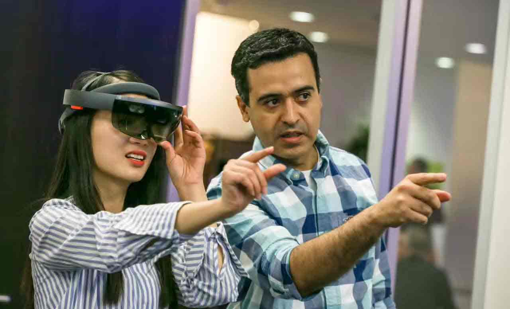
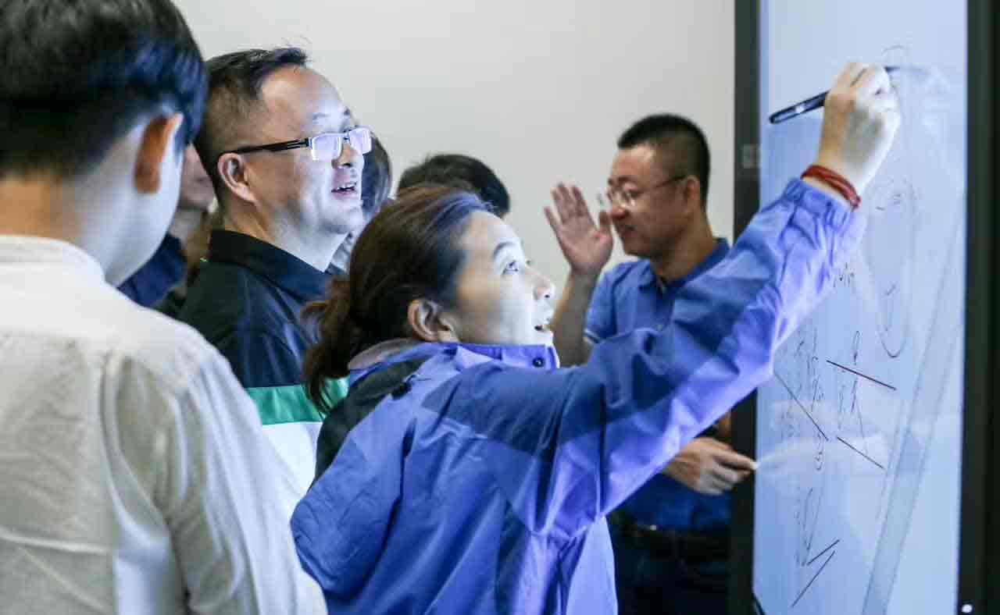

Technology Restructuring Finance:
From Bitcoin to Digital Assets
US blockchain innovation tour Silicon
Go to the United States to see the truth about blockchain technology: from bitcoin to digital assets to smart contracts
- Learn technology：Bitcoin secure storage, digital currency, digital assets, authentication, smart contracts, cross-border payments……
- Exploration application：Dialogue with the United States top blockchain financial technology and innovative enterprises.
- Understand innovation：Learn the technology innovation and application mode innovation of US blockchain
- See the trend：Understand the trend of innovation and commercial empowerment in the blockchain and explore the future direction of the revolution.
- Talk about cooperation：Talk to US blockchain technology innovation and application enterprises to find opportunities for cooperation
- Through the "benchmarking enterprises to visit + deep cultural experience" and other interlocking learning links, layers of product analysis theme, providing comprehensive knowledge and in-depth training, refused to take a notice.
With the most professional blockchain experts and practitioners, explore how blockchain reconstructs the financial world
- 《Blockchain：Drive the finance with technology》——See how blockchain technology reconstructs the financial world
- 《From bitcoin to digital assets》—— See the principles of digital currency, storage, management, development and the future
- 《Digital Asset and Smart Contract Technology》—— Look at the future trends of digital assets
- Linda Xie —— Scalar Capital Co-founder, American International Group Portfolio Risk Analyst
- Kathryn Haun —— CoinbaseInvestment Fund board members，Chief Coordinator, Digital Assets, Ministry of Justice
- Tom Ding —— Chief Executive, String Labs, Blockchain Incubator, Silicon Valley, focusing on Open Protocol Encryption projects
- Jesse Powell ——Online / international payment and fraud expert, co-founder and CEO of Kraken, the most trusted bitcoin trader, 15 years of virtual experience in the currency industry
Dialogue US top blockchain financial technology and application innovation companies to see how technology can subvert the financial industry through commercial applications
- Chain—Blockchain infrastructure construction technology provider, NASDAQ partner
- Ripple—U.S. cross-border payments giant
- Skry—Silicon Valley digital wallet cutting-edge star
- DAH—Digital asset management service provider
- Symbiont.io—Virtual currency "smart securities" publisher
- Axoni—Successful completion of blockchain applications across banks' smart contract testing
- Kraken——The most trusted bitcoin trader
| Day1 Monday Silicon Valley: Blockchain Technology at Stanford Training to Learn How Blockchain Technology Reconstructs the Financial World | |
|---|---|
| Morning | Opening ceremony |
| Morning | Course Training 1: "Blockchain: Technology Driven Finance" |
| Afternoon | Course Training 2: "From Bitcoin to Digital Assets" |
| Day2 Tuesday Silicon Valley: In-depth Blockchain Infrastructure Technology Provider, Dialogue with U.S. Cross-border Payment Giant to Understand Blockchain Financial Technology Applications | |
|---|---|
| Morning | Enterprise Visiting 1: Chain-Block Infrastructure Infrastructure Technology Provider, NASDAQ Partner |
| Afternoon | Exchange Theme: Technical Support for the Construction of Blockchain Infrastructure |
| Day3 Wednesday San Francisco - New York: Dialogue Digital Currency Wallet Emerging, Looking at Technology if Addressing the Painful Financial Sector | |
|---|---|
| Morning | Enterprise Visiting 2: Skry - Emerging Star in Silicon Valley Digital Wallets |
| Afternoon | San Francisco International Airport - Kennedy International Airport Recommended flight: Delta Air Lines DL1077 (14: 20-22: 40, voyage about 5 hours and 20 minutes) |
| Day4 Thursday New York: Focusing on Digital Assets and Smart Contracts to Witness Technology Restructuring Finance | |
|---|---|
| Morning | Course Training 3: "Digital Asset and Smart Contract Technology"
Location: New York University |
| Afternoon | Enterprise Visiting 3: DAH-Digital Asset Management Service Provider
Exchange Theme: Settlement and Clearing Solution for Digital Finance |
| Day5 Friday New York: Focusing on Digital Assets and Smart Contracts to Witness Technology Restructuring Finance | |
|---|---|
| Morning | Enterprise Visiting 4: Symbiont.io - Issue of "smart securities" and blockchain solutions around syndicated loans |
| Afternoon | Exchange Theme: Technical Advantages of Virtual Currency |
| Night | Enterprise Visiting 5: Axoni successfully completes blockchain
applications across bank smart contract testing |
| Day6 Saturday New York: Feel the bustling and vitality of Wall Street | |
|---|---|
| Morning | Cultural Experience: Wall Street, Statue of Liberty, Zero Place |
| Afternoon | Cultural Experience: Woodbury Mall |

Microsoft artificial intelligence 1

Microsoft artificial intelligence 2